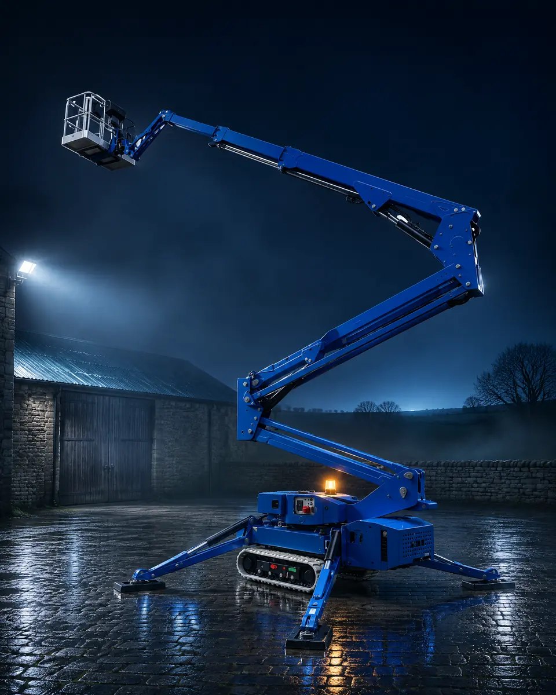
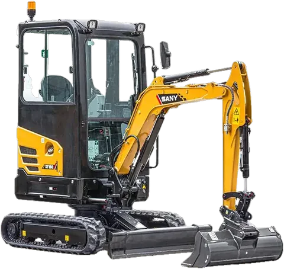
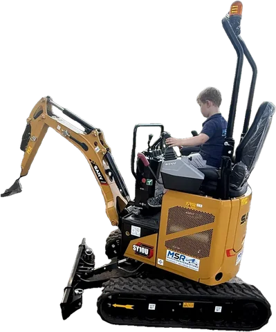
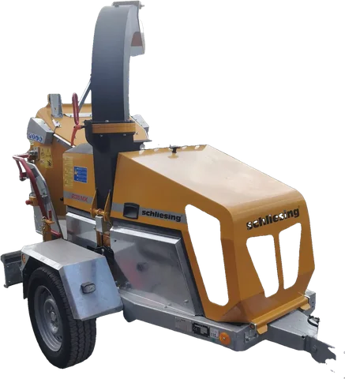
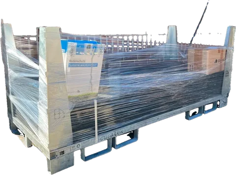
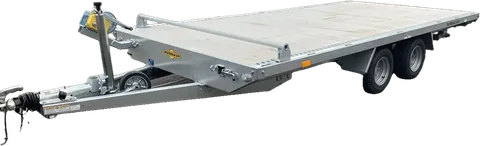
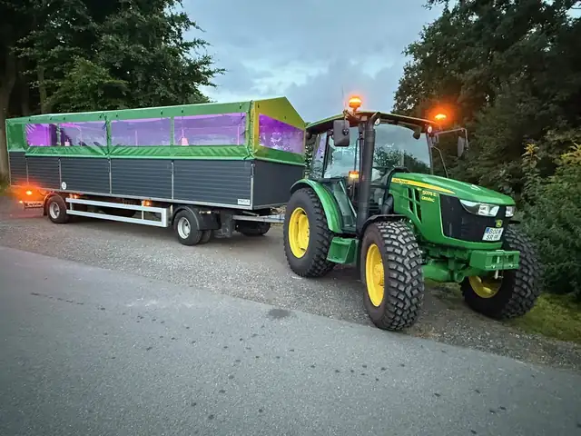
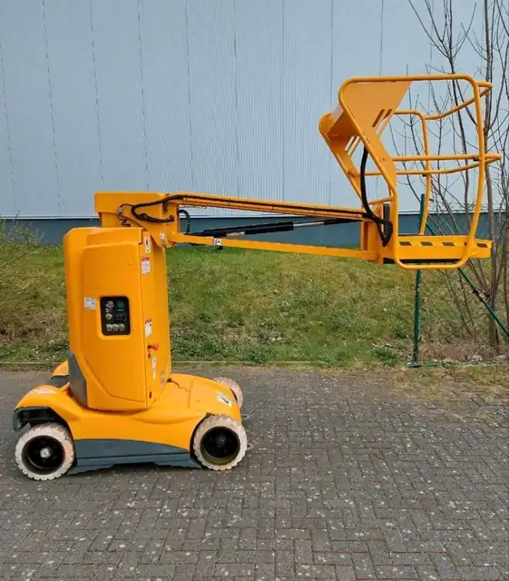
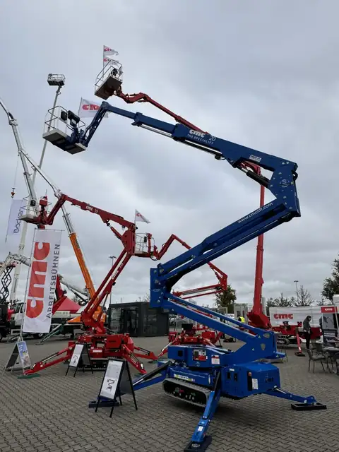

24,70m
Größte Arbeitshöhe im Mietpark
Unsere Performance-Maschine: Teleskopbühne mit Korbarm auf 3,5-t-Iveco, mit Führerschein Klasse B fahrbar.
Multitel MJE250 ansehen
Arbeitsbühnen von 8 bis 25 Metern, Bagger, Anhänger und Planwagen für bis zu 34 Personen. Direkt vom Hof in Rhede.
Neun Bauarten, 16 Arbeitsbühnen. Jede mit Strom und Wasser im Korb. Jede vom Maschinenbauingenieur selbst gewartet. Und die Versicherung ist immer im Mietpreis.
Wir sind IPAF-zertifiziert und weisen Sie bei der Übergabe in jede Maschine ein, auf Wunsch auch mit Bedienerschulung.
24,70m
Unsere Performance-Maschine: Teleskopbühne mit Korbarm auf 3,5-t-Iveco, mit Führerschein Klasse B fahrbar.
Multitel MJE250 ansehen16
Vom 8-m-Scherenlift bis zur 25-m-LKW-Bühne.
Alle Arbeitsbühnen haben Strom- und Wasseranschluss oben im Korb.
Keine versteckten Kosten: Die Maschinenversicherung ist immer im Mietpreis enthalten.
Ein fester Ansprechpartner, der immer erreichbar ist.
Übergabezeiten nach Absprache, auch rund um die Uhr (24/7).
Bei jeder Maschine immer kostenlos dabei.
Alle Maschinen werden vom Maschinenbauingenieur selbst gewartet.
Neun Bühnentypen, von 8 bis 24,70 Meter Arbeitshöhe. Scrollen Sie sich nach oben.
Scherenbühne
60 €netto / Tag, inkl. Versicherung
Sinoboom 1932ME ansehenTeleskopmastbühne
95 €netto / Tag, inkl. Versicherung
Haulotte Star 10 ansehen
Scherenbühne
93 €netto / Tag, inkl. Versicherung
Genie GS-3246 ansehenAnhängerbühne
115 €netto / Tag, inkl. Versicherung
Niftylift 120T ansehen
Raupenbühne mit Autotrailer
195 €netto / Tag, inkl. Anhänger & Versicherung
CMC S15 ansehen
LKW-Teleskopbühne
180 €netto / Tag, inkl. Versicherung
Multitel MT162EX ansehen
Raupenbühne mit Autotrailer
225 €netto / Tag + 25 € Transportanhänger
CMC S20 ansehen
LKW-Gelenkteleskopbühne
220 €netto / Tag, inkl. Versicherung
Ruthmann RS200 ansehenLKW-Teleskopbühne mit Korbarm
250 €netto / Tag, inkl. Versicherung
Multitel MJE250 ansehenNeun unterschiedliche und in Summe 16 Arbeitsbühnen, jede mit Strom und Wasser im Korb. Stellen Sie Ihre Arbeitshöhe ein, dahinter stehen alle Daten und Preise.
8 m Scherenbühne
Arbeitshöhe 8,00 mBreite 79 cmKorblast 230 kg
10 m Teleskopmastbühne
Arbeitshöhe 10,00 mSeitl. Reichweite 3 m bei 200 kgBreite 99 cm
12 m Scherenbühne
Arbeitshöhe 12,00 mBreite 120 cmKorblast 318 kg
12 m Anhängerbühne
Arbeitshöhe 12,20 mSeitl. Reichweite 6,1 mGewicht 1.400 kg
15 m Raupenbühne mit Autotrailer
Arbeitshöhe 14,90 mSeitl. Reichweite 7,2 mRaupenbreite 0,78 m
16 m LKW-Teleskopbühne
Arbeitshöhe 16,15 mSeitl. Reichweite 11,50 m bei 230 kgKorblast 300 kg
20 m Raupenbühne mit Autotrailer
Arbeitshöhe 19,90 mSeitl. Reichweite 10,40 m bei 230 kgRaupenbreite 0,78 m
20 m LKW-Gelenkteleskopbühne
Arbeitshöhe 20,00 mSeitl. Reichweite 10,50 m bei 120 kgKorblast 250 kg
25 m LKW-Teleskopbühne mit Korbarm
Arbeitshöhe 24,70 mSeitl. Reichweite 16,50 m bei 100 kgKorblast 250 kg
Keine Bühne erfüllt alle Angaben zugleich. Nehmen Sie eine Auswahl heraus oder rufen Sie an: 0177-2631728. Wir finden eine Lösung.
20 Meter Arbeitshöhe auf nur 78 cm Raupenbreite. Die S20 fährt mit Diesel oder fast lautlos mit 230 V und hinterlässt mit weißen Ketten keine Spuren.

Kompaktes Gerät für Garten, Tiefbau und Pflasterarbeiten. Transport gegen Aufpreis möglich.





Arbeitsbühnen, Bagger, Bau- und Gartengeräte, Anhänger
Neue Premium-Planwagen mit WC, Getränkekühlung, Standheizung und Musikanlage. Genehmigt nach § 70 StVZO und versichert, im Umkreis von 35 km um Rhede.

Danke für die gute Zusammenarbeit, hat sehr gut geklappt, hab ich gar nicht gedacht.
Seit dem 1. März 2025 fährt unser neuer Premium-Planwagen für bis zu 34 Personen, mit Ledersitzen, Standheizung, WC und Getränkekühlung.
Zum PlanwagenNeu in Rhede: die 10 m hohe Teleskopmastbühne Haulotte Star 10 mit 3 m seitlicher Reichweite bei 200 kg Korblast.
Zur Haulotte Star 10
Im November 2024 haben wir die erste CMC S20 in Deutschland abgeholt. Vorgestellt wurde die Raupenbühne auf den Platformers' Days in Karlsruhe.
Zur CMC S20
Sagen Sie uns, was Sie vorhaben. Wir beraten Sie direkt und melden uns schnell mit einem Angebot.
0177-2631728